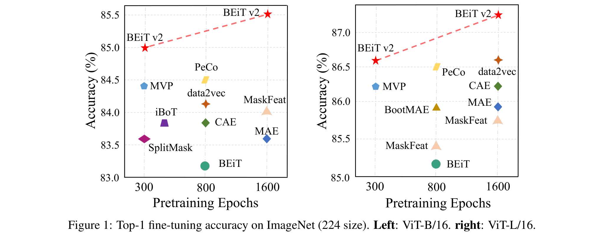
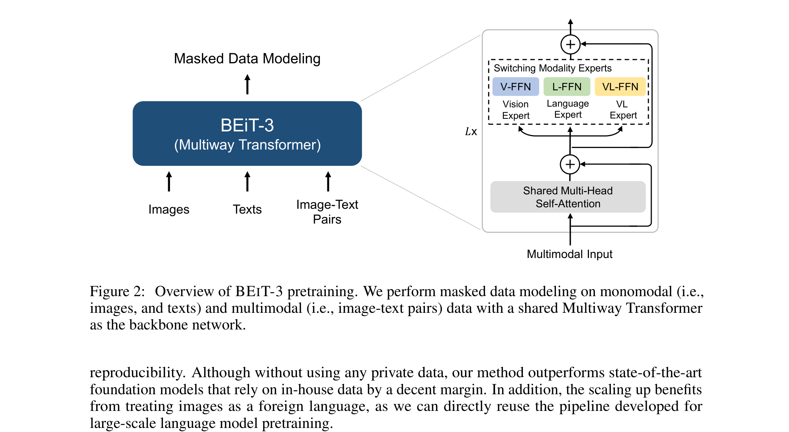

4.4_BEiT
BEiT¶
本笔记涵盖 Microsoft Research 的 BEiT（Bidirectional Encoder representation from Image Transformers）系列三代工作，展示了视觉自监督学习从 Mask Image Modeling 到多模态统一架构的完整演进历程。
| 版本 | 论文 | 时间 | 核心变化 |
|---|---|---|---|
| BEiT v1 | arXiv:2106.08254 | 2021.06 | 视觉领域的 BERT，提出 Mask Image Modeling |
| BEiT v2 | arXiv:2208.06366 | 2022.08 | VQ-KD 语义感知 tokenizer + patch aggregation |
| BEiT-3 | arXiv:2208.10442 | 2022.08 | 多模态统一架构，视觉+语言+多模态三合一 |
第一部分：BEiT v1 - BERT Pre-Training of Image Transformers¶
📄 论文链接：arXiv:2106.08254 | PDF
作者：Hangbo Bao, Li Dong, Songhao Piao, Furu Wei (Harbin Institute of Technology, Microsoft Research)
发表：ICLR 2022
目录¶
- 核心要点
- 1. 背景与动机
- 2. 方法
- 3. BEiT v1 总结
- 核心要点
- 1. 背景与动机
- 2. 方法
- 3. BEiT v2 总结
- 核心要点
- 1. 背景与动机
- 2. 方法
- 2.3 统一预训练任务：Masked Data Modeling
- 2.3.1 混合训练详解
- 2.3.2 混合训练 vs 分阶段训练
- 2.3.3 Multiway Transformer 如何同时处理三种数据
- 2.3.4 单一任务如何隐式学到多种能力
- 2.3.5 与 VLMo 的训练效率对比
- 3. BEiT-3 总结
- 总结与对比
核心要点¶
- 视觉领域的 BERT：将 BERT 的 Mask Language Modeling 思想迁移到视觉领域，提出 Mask Image Modeling（MIM）任务
- 离散视觉 Tokenizer：使用 dVAE 将图像 patch 编码为离散 token，作为预测目标
- 自监督预训练：随机 mask 图像 patch，预测对应的视觉 token，无需人工标注
- 迁移学习有效：预训练的 BEiT 在下游任务（分类、分割、检测）上超越 ImageNet 监督预训练
 BEiT v1：随机 mask 图像 patch，预测对应的离散视觉 token
BEiT v1：随机 mask 图像 patch，预测对应的离散视觉 token
1. 背景与动机¶
1.1 Vision Transformer 的数据饥渴问题¶
Vision Transformer（ViT）在 ImageNet 上取得了优异性能，但相比 CNN 需要更多训练数据：
"empirical studies show that vision Transformers require more training data than convolutional neural networks"
核心问题：如何在不依赖大规模标注数据的情况下，有效训练 Vision Transformer？
1.2 BERT 的启发¶
BERT 在 NLP 领域的巨大成功证明了自监督预训练的有效性：
- Mask Language Modeling (MLM)：随机 mask 文本 token，预测被 mask 的 token
- 双向编码器：利用上下文信息预测缺失部分
- 预训练-微调范式：在大规模无标注数据上预训练，下游任务微调
关键洞察：能否将 BERT 的思想迁移到视觉领域？
1.3 现有自监督方法的局限¶
2021 年初，视觉自监督学习主要有两条路线：
- 对比学习（SimCLR、MoCo、DINO 等）：
- 需要精心设计正负样本对
- 依赖数据增强策略
-
学习的是全局表示，缺乏细粒度理解
-
自蒸馏（BYOL 等）：
- 需要动量更新，训练复杂
- 同样缺乏细粒度理解
BEiT 的路线：借鉴 BERT，直接预测被 mask 的图像区域，更简单直接。
2. 方法¶
2.1 核心思想：Mask Image Modeling (MIM)¶
预训练目标：
输入：原始图像 → 切分为 16×16 的 patch
Mask：随机 mask 40% 的 patch（替换为 [M] token）
预测：预测被 mask patch 对应的视觉 token
下游任务：
去掉 mask，附加任务层，微调整个模型
关键挑战：图像的"token"是什么？
2.2 离散视觉 Tokenizer¶
BEiT 使用 dVAE（discrete Variational AutoEncoder）将图像编码为离散 token：
Tokenizer 训练（独立阶段）：
输入：原始图像 → 切分为 16×16 patch
编码：dVAE 编码器 → 连续特征
量化：Gumbel-Softmax → 离散 token（从 8192 个码本中选择）
解码：dVAE 解码器 → 重建图像
训练目标：重建损失 + KL 散度
Tokenizer 特点： - 码本大小：8192（与 BERT 的词表大小相当） - 每个 patch → 1 个离散 token - 224×224 图像 → 196 个 token（14×14 grid）
2.3 BEiT 预训练¶
预训练流程：
1. Tokenize：用训练好的 dVAE 将所有图像转为 token 序列
2. Mask：随机选择 40% 的 patch，替换为 [M] token
3. 编码：将 masked image 输入 ViT
4. 预测：用 ViT 输出预测被 mask 位置的 token（8192 分类）
5. 损失：交叉熵损失（仅计算被 mask 的位置）
架构细节：
┌─────────────────────────────────────┐
│ Masked Image Patches │
│ [P1] [M] [P3] [P4] [M] ... [P196] │
└────────────────┬────────────────────┘
│
▼
┌─────────────────────────────────────┐
│ Vision Transformer (ViT) │
│ - 12/24 layers (Base/Large) │
│ - 768/1024 hidden dim │
│ - 12/16 attention heads │
└────────────────┬────────────────────┘
│
▼
┌─────────────────────────────────────┐
│ Prediction Head (MLP) │
│ - 预测被 mask 位置的 token │
│ - 输出维度：8192（码本大小） │
└────────────────┬────────────────────┘
│
▼
┌─────────────────────────────────────┐
│ Cross-Entropy Loss (masked only) │
└─────────────────────────────────────┘
关键超参数： - Mask ratio：40%（BERT 是 15%，图像冗余度更高） - Mask token：可学习的 [M] embedding - 预测目标：离散 token（8192 分类）
2.4 下游任务微调¶
图像分类：
预训练 BEiT → 附加分类头 → 微调
- 去掉 prediction head
- 添加 [CLS] token 或 global average pooling
- 附加线性分类器
- 微调整个模型
语义分割：
预训练 BEiT → 附加 UPerNet → 微调
- 使用 ViT 的 patch 级特征（不用 [CLS]）
- 附加分割头（UPerNet）
- 微调整个模型
3. BEiT v1 总结¶
3.1 核心贡献¶
- Mask Image Modeling：将 BERT 的思想成功迁移到视觉领域
- 离散视觉 Tokenizer：用 dVAE 将图像转为离散 token，作为预测目标
- 自监督预训练：无需人工标注，在大规模图像上预训练
- 迁移学习有效：预训练 BEiT 在多个下游任务上超越 ImageNet 监督预训练
3.2 与同期方法对比¶
| 方法 | 预训练目标 | 需要负样本 | 需要动量更新 | 细粒度理解 |
|---|---|---|---|---|
| BEiT | Mask Image Modeling | ❌ | ❌ | ✅ |
| DINO | 自蒸馏 | ❌ | ✅ | ✅ |
| MoCo v3 | 对比学习 | ✅ | ✅ | ❌ |
| SimCLR | 对比学习 | ✅ | ❌ | ❌ |
3.3 局限性¶
- Tokenizer 训练复杂：dVAE 需要单独训练，增加流程复杂度
- 离散 token 信息损失：离散化会丢失部分视觉信息
- Mask ratio 敏感：40% 是经验值，不同任务可能需要不同比例
第二部分：BEiT v2 - Masked Image Modeling with Vector-Quantized Visual Tokenizers¶
📄 论文链接：arXiv:2208.06366 | PDF
作者：Zhiliang Peng, Li Dong, Hangbo Bao, Qixiang Ye, Furu Wei (University of Chinese Academy of Sciences, Microsoft Research)
发表：2022 年 8 月
核心要点¶
- 语义感知视觉 Tokenizer：提出 Vector-Quantized Knowledge Distillation（VQ-KD）算法训练语义感知的视觉 tokenizer，将 MIM 从像素级提升到语义级
- VQ-KD 以 CLIP 为 teacher：VQ-KD 的 decoder 学习重建 teacher 模型（OpenAI CLIP-B/16）的语义特征，使离散 token 携带高级语义信息
- Patch Aggregation 策略：引入 patch 聚合策略，通过信息瓶颈鼓励 [CLS] token 聚合全局信息，缓解 patch 级预训练与图像级表示之间的差距
- 更强的性能：在 ImageNet 分类和 ADE20K 语义分割上全面超越 BEiT v1 及其他 MIM 方法

Figure 1: BEiT v2 在 ImageNet (224 size) 上的 Top-1 fine-tuning 准确率，左为 ViT-B/16，右为 ViT-L/161. 背景与动机¶
1.1 BEiT v1 的局限：低级像素重建目标¶
BEiT v1 证明了 Mask Image Modeling 的有效性，但其重建目标存在根本性不足：
"most existing studies operate on low-level image pixels, which hinders the exploitation of high-level semantics for representation models"
BEiT v1 使用 dVAE 将图像编码为离散 token，但 dVAE 的重建目标是原始像素（low-level image elements），而非高级语义信息。这导致：
- Token 语义性不足：dVAE tokenizer 学到的是低级视觉特征（像素级重建），缺乏高级语义
- 重建目标层级低：MIM 预测的是低级 token，难以学到高级语义表示
- 全局表示弱：MIM 以 patch 重建为首要目标，削弱了全局图像表示的学习
1.2 核心改进思路¶
关键问题：如何将 MIM 从像素级提升到语义级？
BEiT v2 的两个核心创新： 1. VQ-KD 语义感知 Tokenizer：提出 Vector-Quantized Knowledge Distillation 算法，以 CLIP 等 teacher 模型的语义特征为重建目标，训练语义感知的视觉 tokenizer 2. Patch Aggregation 策略：通过信息瓶颈鼓励 [CLS] token 聚合全局信息，缓解 patch 级预训练与图像级表示之间的差距
2. 方法¶
2.1 Vector-Quantized Knowledge Distillation (VQ-KD)¶
BEiT v2 的核心创新是提出 VQ-KD（Vector-Quantized Knowledge Distillation） 算法来训练语义感知的视觉 tokenizer。
VQ-KD 的架构：
输入图像
│
▼
┌─────────────────────────────┐
│ Tokenizer Encoder (ViT) │
│ 将图像编码为连续特征向量 │
└──────────┬──────────────────┘
│
▼
┌─────────────────────────────┐
│ Vector Quantizer │
│ L2 归一化 → 查找码本最近邻 │
│ 码本: K=8192, D=32 │
└──────────┬──────────────────┘
│
离散视觉 Token (z₁, z₂, ..., z_N)
│
▼
┌─────────────────────────────┐
│ Decoder (3层 Transformer) │
│ 重建 teacher 模型的语义特征 │
└──────────┬──────────────────┘
│
▼
重建输出 oᵢ
│
与 Teacher 特征 tᵢ 计算损失
(Teacher: OpenAI CLIP-B/16)
Tokenizer 编码与量化： - 输入图像切分为 14×14 grid 的 16×16 patch - ViT 编码器将每个 patch 编码为连续向量 hᵢ - 量化器对每个 hᵢ 进行 L2 归一化，然后在码本中查找最近邻（余弦相似度）：
zᵢ = arg minⱼ ||ℓ₂(hᵢ) - ℓ₂(vⱼ)||²
- 码本大小 K=8192，码本嵌入维度 D=32（低维空间降低量化难度）
Decoder 与 Teacher 模型： - Decoder 是一个 3 层标准 Transformer，与编码器具有相同的维度和注意力头数 - Decoder 的输出 oᵢ 旨在重建 teacher 模型的语义特征 tᵢ - Teacher 模型：OpenAI CLIP-B/16（论文也对比了 DINO 作为 teacher） - 训练目标：最大化 decoder 输出与 teacher 特征的余弦相似度
VQ-KD 训练目标：
max Σᵢ cos(oᵢ, tᵢ) ← 重建 teacher 语义特征
- ||sg[ℓ₂(hᵢ)] - ℓ₂(vzᵢ)||² ← commitment loss (codebook)
- ||ℓ₂(hᵢ) - sg[ℓ₂(vzᵢ)]||² ← commitment loss (encoder)
其中 sg[·] 为 stop-gradient 算子
关键技术细节： - Straight-Through Gradients：量化过程不可微，梯度直接从 decoder 输入复制到编码器输出（类似 VQ-VAE） - 码本利用率优化：使用 L2 归一化距离 + 32 维低维码本嵌入 + 指数移动平均（EMA）更新码本，缓解码本坍缩问题 - Teacher 选择：CLIP 作为 teacher 比 DINO 效果更好（实验验证了 CLIP 的语义特征更适合作为重建目标）
VQ-KD 训练后：编码器作为语义视觉 tokenizer，离散码作为 BEiT 预训练的监督信号
2.1.1 视觉 Tokenizer 的角色定位：与文本 Tokenizer 的对比¶
在 BEiT 系列（尤其是 BEiT-3 统一架构）中，视觉 tokenizer（VQ-KD）和文本 tokenizer（SentencePiece）承担了不同的角色。理解这种不对称性是理解 BEiT 框架的关键。
文本和图像在 tokenizer 使用上的根本区别：
文本：
SentencePiece ──→ 文本 token ID ──→ embedding lookup ──→ 输入表示
SentencePiece ──→ 文本 token ID ──────────────────────→ 预测目标（ground truth）
同一个 tokenizer，输入和目标一致
图像：
原始 patch ──→ 线性投影（linear projection）──→ 输入表示
VQ-KD tokenizer ──→ 离散视觉 token ──────────→ 预测目标（ground truth）
两个不同的东西，输入和目标不一致
文本 Tokenizer（SentencePiece）：
SentencePiece 是 Google 开发的无参数统计分词工具（Kudo & Richardson, 2018），在 BERT、T5、GPT 等模型中广泛使用。
输入文本："The cat sat on the mat"
│
▼
SentencePiece 分词（BPE 或 Unigram 模型）
│
▼
token 序列：["▁The", "▁cat", "▁sat", "▁on", "▁the", "▁mat"]
│
▼
查词表 → token ID：[450, 3210, 1892, 21, 12, 5781]
│
▼
embedding lookup → 连续向量（模型输入）
- 无参数：训练完成后就是固定的字符串到 ID 的映射规则，没有可学习的参数
- 确定性：同一个词永远映射到同一个 token ID
- 训练方法：在大规模语料上用 BPE（Byte-Pair Encoding）或 Unigram 语言模型统计子词频率，无监督
- 不涉及语义：分词结果纯粹基于统计频率，"cat" 和 "dog" 是否共享子词完全取决于拼写统计，不涉及语义理解
- 输入 = 预测目标：模型输入的 token ID 和 mask-then-predict 要预测的 token ID 是同一个东西
视觉 Tokenizer（VQ-KD）在 BEiT 中的角色：
原始图像
│
├──── 路径 A（模型输入）─────────────────────────┐
│ 切分 patch → 线性投影 → 视觉 embedding │
│ （Transformer 实际看到的东西） │
│ ▼
│ ViT / Multiway Transformer
│ │
└──── 路径 B（预测目标）──────────────────────────┐
VQ-KD encoder → 量化 → 离散 token │
（mask 位置要预测的 ground truth） │
▼
交叉熵损失
- 有参数：encoder 是 ViT，量化器有可学习的码本，decoder 是 Transformer——都是神经网络参数
- 语义感知：码本中的 token 携带 CLIP 的语义信息（因为 decoder 训练目标是重建 CLIP 特征）
- 非确定性：同一个视觉 patch 映射到哪个 token 取决于 encoder 的输出和码本的最近邻查找
- 仅做预测目标：VQ-KD 产出的离散 token 只作为 ground truth，模型的输入是原始 patch 的线性投影
核心区别对比：
| 维度 | 文本 Tokenizer（SentencePiece） | 视觉 Tokenizer（VQ-KD） |
|---|---|---|
| 本质 | 统计分词规则（无参数） | 神经网络（有参数） |
| 训练方式 | 无监督 BPE/Unigram，统计子词频率 | 有监督知识蒸馏，以 CLIP 为 teacher |
| 码本/词表 | 固定词表（子词 → ID） | 可学习码本（8192 个 32 维嵌入向量） |
| token 含义 | 子词片段（如 "cat" → "▁c", "at"） | 语义视觉概念（如"天空""动物毛发"等） |
| 输入 = 目标？ | ✅ 是——同一个 tokenizer 既提供输入也提供目标 | ❌ 否——输入是线性投影，目标是 VQ-KD token |
| 在模型中的角色 | 输入表示 + 预测目标 | 仅预测目标 |
| 可微性 | 完全不可微（字符串映射） | 量化不可微（用 Straight-Through Estimator） |
| 信息层级 | 低级（拼写/字形） | 高级（语义，继承自 CLIP） |
| 参数量 | 0（仅一张查找表） | Encoder (ViT-B/16, ~86M) + Decoder + 码本 |
为什么视觉的输入和目标要分开？
这是 BEiT 系列最核心的设计决策之一：
- NLP 中不需要分开：文本本身就是离散的，token ID 查表就是连续向量，输入和预测目标天然统一
- 图像是连续的：像素值不能直接做分类预测，必须转为离散 token
- 但不能用离散 token 做输入：如果用 VQ-KD 的离散 token 做输入（查码本嵌入），模型输入的信息量就被码本限制了（信息瓶颈）——模型只能看到码本"认为"重要的信息，丢失了细节
- 解决方案：输入用信息丰富的原始 patch 线性投影（保留全部像素信息），预测目标用语义丰富的 VQ-KD 离散 token（迫使模型学到高级语义）
输入（丰富像素信息） → Transformer → 预测（高级语义 token）
全信息 信息瓶颈
这种信息不对称正是 BEiT 从 v1（dVAE 像素级）到 v2（VQ-KD 语义级）的关键进化——模型有足够的输入信息来推断被 mask 区域的语义内容，但预测目标只关心语义层面。
2.1.2 视觉 Tokenizer 的作用与 MAE 范式的对比¶
视觉 tokenizer 的设计并非唯一选择。MAE（Masked Autoencoders）采用了一种更简单的范式——直接预测原始像素，无需 tokenizer。理解两者的区别，有助于理解 BEiT 为什么坚持使用视觉 tokenizer。
两种范式的核心区别：
BEiT 范式：
图像 patch → [mask] → ViT encoder → 预测离散视觉 token（分类问题）
↑
VQ-KD/dVAE tokenizer 提供
（语义压缩后的离散标签）
MAE 范式：
图像 patch → [mask] → ViT encoder → lightweight decoder → 重建原始像素（回归问题）
↑
直接用原图 patch 作为目标
BEiT v2 论文 Section 1 明确指出了像素级重建的问题：
"most existing studies operate on low-level image pixels, which hinders the exploitation of high-level semantics for representation models"
视觉 Tokenizer 的四个核心作用：
1. 信息压缩与语义抽象
原始 patch 包含大量低级信息（纹理、颜色、光照细节），而 VQ-KD tokenizer 将这些信息压缩为 8192 个语义类别之一：
原始 patch (16×16×3 = 768 维连续值)
↓ VQ-KD
离散 token (1 个整数，取值 0~8191)
这种压缩迫使模型学习抽象语义而非低级细节。例如一个 patch 的像素值可能千变万化（不同光照、角度、尺度），但经过 VQ-KD 后，"天空的蓝色区域"可能都映射到同一个 token。模型不需要预测精确像素，只需预测"这是什么语义概念"。
2. 将回归问题转为分类问题
BEiT v1 Section 1 明确指出：
"the images and texts have different elementary units. Specifically, the texts are modeled as discrete tokens (i.e., words, subwords or characters) in a finite vocabulary, while the raw image is represented as continuous RGB values of pixels."
- BEiT：预测离散 token → 8192 分类问题 → 用交叉熵损失，与 BERT 的 MLM 完全对齐
- MAE：预测连续像素值 → 回归问题 → 用 MSE 损失
分类问题在优化上通常比回归更稳定（梯度信号更清晰，损失尺度更可控）。
3. 注入语义先验知识
VQ-KD tokenizer 以 CLIP 为 teacher，这意味着 VQ-KD 的离散 token 不仅仅是"视觉相似"的聚类，而是继承了 CLIP 的语义对齐信息。例如码本中可能出现这样的聚类： - token #42 对应"有文字的平面区域"（CLIP 认为这类视觉特征与"文本"语义相关） - token #187 对应"动物的毛发纹理"（CLIP 认为这与"动物"语义相关）
这种语义先验是 MAE 的纯像素目标不具备的。
4. 与 NLP 框架的统一（BEiT-3 的需求）
在 BEiT-3 中，视觉 tokenizer 的作用更加关键：
文本：SentencePiece → 离散 token → mask-then-predict（分类）
图像：VQ-KD → 离散 token → mask-then-predict（分类）
两个模态统一为"预测离散 token"的同一个任务
如果图像用 MAE 的像素回归，文本用 MLM 的分类，就无法在同一个 loss 框架下统一训练。
MAE 的设计哲学：
MAE 论文 Section 3 提出了完全不同的思路：
"we have a simple implementation of masked autoencoders that is effective yet has received little attention in prior work"
MAE 的核心设计： - 极高 mask 比例（75%）：MAE 发现，当 mask 比例足够高时，即使预测原始像素也能学到很好的表示。高 mask 比例迫使模型理解全局语义才能重建局部像素 - 非对称编码器-解码器：encoder 只处理可见的 25% patch（极大加速），轻量 decoder 处理全部 patch 做重建 - 无需 tokenizer：直接预测归一化后的像素值，简单直接
MAE 的论点可以概括为："如果 mask 比例够高，预测像素本身就足够难，不需要 tokenizer 做语义压缩"。
MAE 能否替代 BEiT 的 Tokenizer？
从纯视觉任务性能看：部分可以。MAE 在纯视觉任务上取得了与 BEiT v1 相当甚至更好的性能（MAE 用更简单的架构 + 75% mask）。这说明高 mask 比例确实能弥补像素级目标的不足，tokenizer 训练确实增加了流程复杂度。对于纯视觉任务，MAE 范式是可行的替代方案。
从语义表示质量看：不能完全替代。BEiT v2 的实验表明，VQ-KD tokenizer 带来了显著的性能提升（相比 BEiT v1 和 MAE）。VQ-KD 的离散 token 携带语义信息，迫使模型学习高级语义而非低级像素。BEiT v2 的 token 可视化显示，码本中的 token 对应有意义的语义概念（如"天空""动物毛发"等），这种语义级别的表示在下游任务上更有优势。
从多模态统一看：完全不能替代。BEiT-3 的核心是"图像作为外语"——用同一个 mask-then-predict 任务统一视觉和语言。这要求文本和图像都必须转为离散 token，预测目标都必须是分类问题，这样才能在同一个 batch 中混合训练。如果 BEiT-3 用 MAE 的范式：
图像：mask → 预测像素（回归，MSE loss）
文本：mask → 预测 token（分类，交叉熵 loss）
两种 loss 无法统一，需要像 VLMo 一样用多个 loss，违背了 BEiT-3 的"单一任务"原则
总结对比：
| 维度 | BEiT（Tokenizer） | MAE（无 Tokenizer） |
|---|---|---|
| 预测目标 | 语义离散 token（分类） | 原始像素（回归） |
| 信息层级 | 高级语义（经 CLIP 蒸馏） | 低级像素 |
| 复杂度 | 需要训练 tokenizer | 无需额外训练 |
| 纯视觉性能 | 强（v2 更强） | 强（75% mask 弥补） |
| 语义表示 | 更好（token 可视化验证） | 较弱（依赖高 mask 比例） |
| 多模态扩展 | 天然支持（统一为分类） | 不支持（像素回归无法与 MLM 统一） |
| 设计哲学 | "压缩信息，预测语义" | "高 mask 比例，预测像素" |
一句话：MAE 用简单性换来了纯视觉任务的竞争力，但 BEiT 的 tokenizer 在语义表示质量和多模态统一上提供了 MAE 无法替代的优势。BEiT-3 的"图像作为外语"范式，本质上依赖于视觉 tokenizer 将图像"翻译"成与文本同构的离散 token 序列。
2.2 Patch Aggregation 策略¶
问题：MIM 以 patch 重建为首要目标，削弱了全局图像表示的学习（如 linear probing 性能弱）
解决方案：受 Gao & Callan (2021) 启发，构建信息瓶颈（representation bottleneck），鼓励 [CLS] token 聚合全局信息
┌──────────────────────────────────────────┐
│ Vision Transformer (L 层) │
│ │
│ 第 l 层 patch tokens: {hˡᵢ} │
│ │ │
│ ...（中间层正常处理）... │
│ │ │
│ 第 L 层 [CLS] token: hᴸ_CLS │
│ │ │
│ ▼ │
│ 拼接: S = [hᴸ_CLS, hˡ₁, ..., hˡ_N] │
│ （第 L 层 CLS + 第 l 层 patch tokens） │
│ │ │
│ ▼ │
│ 浅层 Transformer Decoder (2层) │
│ → 再次进行 masked prediction │
│ → L_c^MIM 损失 │
└──────────────────────────────────────────┘
最终损失 = L_MIM（第 L 层原始 MIM） + L_c^MIM（patch aggregation）
核心思想： - 将最后一层的 [CLS] token 与中间层的 patch tokens 拼接，送入浅层 decoder 再次预测 - 由于 [CLS] 必须通过浅层 decoder 完成 patch 预测，模型被迫将全局信息推入 [CLS] token - 浅层 decoder 仅在预训练时使用，预训练后丢弃
2.3 BEiT v2 预训练¶
预训练流程（继承 BEiT v1 的 MIM 框架）：
1. Tokenize：用 VQ-KD 训练好的 tokenizer 将图像转为离散 token
2. Mask：随机 block-wise mask 约 40% 的 patch（约 75 个 patch），替换为 [M] token
3. 编码：将 masked image + [CLS] token 输入 ViT
4. 预测：
- 第 L 层的 masked positions → MIM Head → 预测 visual token → L_MIM
- 第 L 层 [CLS] + 第 l 层 patches → 浅层 Decoder → 预测 visual token → L_c^MIM
5. 损失：L_MIM + L_c^MIM（仅计算 masked 位置）
关键超参数： - Mask ratio：40%（block-wise masking，与 BEiT v1 相同） - 码本大小：8192（码本维度 32） - Teacher 模型：CLIP-B/16（base 和 large 预训练共用同一个 base-size teacher） - Tokenizer：ViT-B/16（用于 base 和 large 预训练） - 训练数据：ImageNet-1K（无标签）
3. BEiT v2 总结¶
3.1 核心贡献¶
- VQ-KD 语义感知 Tokenizer：提出 Vector-Quantized Knowledge Distillation，以 CLIP 为 teacher 训练语义感知 tokenizer，将 MIM 从像素级提升到语义级
- Patch Aggregation 策略：通过信息瓶颈鼓励 [CLS] token 聚合全局信息，改善全局表示学习
- 更强性能：在 ImageNet fine-tuning 和 linear probing 上大幅超越 BEiT v1 及其他 MIM 方法
- 语义可视化：学到的 codebook 对应有意义的语义概念（论文 Figure 4-5 可视化验证）
3.2 与 BEiT v1 对比¶
| 维度 | BEiT v1 | BEiT v2 |
|---|---|---|
| Tokenizer | dVAE（像素级重建） | VQ-KD（语义级重建，CLIP teacher） |
| 重建目标 | 原始像素 | CLIP 语义特征 |
| 全局表示 | 弱（linear probing 差） | 强（patch aggregation 增强） |
| 码本大小 | 8192 | 8192（维度 32） |
| 预训练目标 | MIM | MIM + Patch Aggregation |
| 性能 | baseline | 更强（ImageNet 和 ADE20K 均有显著提升） |
第三部分：BEiT-3 - Image as a Foreign Language 🚗¶
📄 论文链接：arXiv:2208.10442 | PDF
作者：Wenhui Wang, Hangbo Bao, Li Dong, Johan Bjorck, Zhiliang Peng, Qiang Liu, Kriti Aggarwal, Owais Khan Mohammed, Saksham Singhal, Subhojit Som, Furu Wei (Microsoft Corporation)
发表：2022 年 8 月
核心要点¶
- "图像作为外语"：将图像视为一种"外语"（Imglish），与文本（English）统一建模，图文对视为"平行句子"（parallel sentences）
- 多模态统一架构：单一 Multiway Transformer 同时处理视觉、语言、多模态任务
- Multiway Transformer：共享自注意力层 + 模态专属 FFN（modality experts），平衡共享与特化
- 统一预训练任务：仅使用一个预训练任务——mask-then-predict（masked data modeling），在图像、文本、图文对上统一进行

Figure 1: BEiT-3 在视觉和视觉-语言任务上全面达到 SOTA 性能1. 背景与动机¶
1.1 多模态学习的架构割裂¶
2022 年，多模态学习存在明显的架构割裂：
视觉模型（ViT、BEiT）： - 仅处理图像 - 用于分类、分割等视觉任务
语言模型（BERT、GPT）： - 仅处理文本 - 用于 NLU、NLG 等语言任务
多模态模型（CLIP、BLIP）： - 双塔架构或编码器-解码器 - 视觉和语言分别编码，后期融合
核心问题：能否用单一架构统一处理所有模态？
1.2 "图像作为外语"的类比¶
关键洞察：
文本：sequence of tokens (words/subwords)
图像：sequence of patches (visual tokens)
相似性：
- 都是序列输入
- 都可以用 Transformer 处理
- 都可以用 mask-predict 预训练
差异：
- 文本是离散的（词表）
- 图像是连续的（像素）
- 但图像可以 tokenize 为离散 token
核心思想：将图像视为一种"外语"，与文本统一建模。
1.3 统一架构的优势¶
为什么需要统一架构？
- 参数共享：视觉和语言共享 Transformer 参数，减少参数量
- 知识迁移：视觉和语言知识互相促进
- 灵活扩展：可以轻松添加新模态（音频、视频等）
- 简化设计：无需针对不同模态设计不同架构
2. 方法¶
2.1 统一输入表示¶
核心思想：所有模态都转为 token 序列，以统一的方式进行 masked data modeling
Tokenizer： - 文本：使用 SentencePiece tokenizer 进行分词 - 图像：使用 BEiT v2 的 VQ-KD tokenizer 将图像转为离散视觉 token，作为重建目标
文本输入：
"Hello world" → SentencePiece → [HELLO] [WORLD] → 文本 token embeddings
图像输入：
Image → patch 切分 → VQ-KD tokenizer → [P1] [P2] ... [P196] → 视觉 token embeddings
多模态输入（图文对 = “平行句子”）：
Image + Text → [P1] ... [P196] [CLS] [HELLO] [WORLD]
└──── 视觉 ────┘ └─── 文本 ───┘
Modality Embeddings：
- 视觉 token 添加 [vis] embedding
- 文本 token 添加 [txt] embedding
- 帮助模型区分不同模态
2.2 Multiway Transformer¶
核心挑战：如何在共享架构的同时，保留模态特化能力？
解决方案：Multiway Transformer——共享自注意力 + 模态专属 FFN（modality experts）
 Figure 2: BEiT-3 预训练概览。使用共享的 Multiway Transformer 对单模态（图像、文本）和多模态（图文对）数据进行 masked data modeling
Figure 2: BEiT-3 预训练概览。使用共享的 Multiway Transformer 对单模态（图像、文本）和多模态（图文对）数据进行 masked data modeling
标准 Transformer Block：
LayerNorm → Multi-Head Attention → LayerNorm → FFN → Residual
Multiway Transformer Block：
LayerNorm → Multi-Head Attention → LayerNorm → Modality-Specific FFN → Residual
其中 FFN 根据模态选择（modality experts）：
- 视觉 token → V-FFN (Vision Expert)
- 文本 token → L-FFN (Language Expert)
- 多模态 token → VL-FFN (VL Expert)
架构设计：
┌─────────────────────────────────────────┐
│ Multiway Transformer │
├─────────────────────────────────────────┤
│ │
│ ┌─────────────────────────────────┐ │
│ │ Shared Multi-Head Attention │ │
│ │ (共享，所有模态可见) │ │
│ └────────────┬────────────────────┘ │
│ │ │
│ ┌──────┼──────┐ │
│ │ │ │ │
│ ▼ ▼ ▼ │
│ ┌────────┐┌────────┐┌────────┐ │
│ │ V-FFN ││ L-FFN ││ VL-FFN │ │
│ │(Vision)││(Lang) ││(VL) │ │
│ └────┬───┘└────┬───┘└────┬───┘ │
│ │ │ │ │
│ ▼ ▼ ▼ │
│ [视觉token] [文本token] [多模态token] │
└─────────────────────────────────────────┘
关键设计： - 注意力层共享：所有模态共享自注意力参数，学习跨模态对齐和深度融合 - FFN 层分离（modality experts）：不同模态使用不同的 FFN，保留模态特化能力 - 层级配置：每一层包含 Vision Expert 和 Language Expert；顶部三层额外增加 VL Expert，用于融合编码器的深度跨模态交互
2.3 统一预训练任务：Masked Data Modeling¶
核心设计：BEiT-3 仅使用一个预训练任务——mask-then-predict（masked data modeling），在单模态和多模态数据上统一进行。
"we only use one pretraining task, i.e., mask-then-predict, to train a general-purpose multimodal foundation model"
与以往方法的对比：以往视觉-语言模型通常使用多个预训练任务（image-text contrast、image-text matching、word-patch/region alignment），导致扩展不友好。BEiT-3 的单一任务设计使训练过程易于扩展（scaling-up friendly），且可使用更小的 batch size。
统一 mask-then-predict 任务：
单模态图像（Imglish）：
- 输入：masked image
- 预测：被 mask 的 visual tokens（VQ-KD tokenizer 生成）
- Mask 比例：40%（block-wise masking，同 BEiT）
- 使用：V-FFN
单模态文本（English）：
- 输入：masked text
- 预测：被 mask 的 text tokens
- Mask 比例：15%
- 使用：L-FFN
多模态图文对（“平行句子”）：
- 输入：masked image + masked text
- 预测：被 mask 的 visual tokens 和 text tokens
- 文本 Mask 比例：50%（比单模态更高）
- 使用：V-FFN + L-FFN（+ 顶部三层 VL-FFN）
统一任务的优势： - mask-then-predict 不仅学习表示，还学习模态间的对齐 - 单一任务避免了多任务的工程复杂性 - 更小的 batch size 即可训练（对比学习需要超大 batch）
2.3.1 混合训练详解：三种数据统一做 mask-then-predict¶
混合训练的关键是：三种不同类型的数据被混入同一个 batch 中训练，而不是分阶段训练。每种数据都执行同一个操作——mask 一部分 token，然后预测被 mask 的 token——但具体的 mask 策略和预测目标不同。
单模态图像（Imglish）：
输入：ImageNet-21k 等纯图像数据
处理流程：
原始图像
│
├──→ patch 切分 → 线性投影 → 视觉 token embeddings + [vis] embedding
│ （模型的输入表示）
│
└──→ VQ-KD tokenizer → 离散视觉 token（预测目标 / ground truth）
Mask 策略：
- 40% block-wise masking（与 BEiT v1/v2 相同）
- 将选中的 patch 替换为可学习的 [M] token
预测：
- 被 mask 位置的输出 → V-FFN → 分类头 → 预测离散视觉 token（8192 分类）
- 损失：交叉熵，仅计算被 mask 的位置
单模态文本（English）：
输入：Wikipedia + BookCorpus 等纯文本数据
处理流程：
原始文本 → SentencePiece 分词 → 文本 token embeddings + [txt] embedding
（输入和预测目标都是文本 token，与 BERT 的 MLM 一样）
Mask 策略：
- 15% random masking（与 BERT 相同）
- 被选中的 token 替换为 [MASK]
预测：
- 被 mask 位置的输出 → L-FFN → 分类头 → 预测文本 token
- 损失：交叉熵，仅计算被 mask 的位置
多模态图文对（"平行句子"）：
输入：Conceptual Captions、SBU、LAION 等图文对数据
处理流程：
图像部分：patch 切分 → 线性投影 → 视觉 token embeddings + [vis] embedding
文本部分：SentencePiece → 文本 token embeddings + [txt] embedding
拼接：[P1] [P2] ... [P196] [SEP] [T1] [T2] ... [TN]
└──── 视觉部分 ────┘ └─── 文本部分 ──┘
Mask 策略：
- 图像部分：40% block-wise masking
- 文本部分：50% random masking（比单模态文本的 15% 更高！）
- 两部分同时 mask
预测：
- 被 mask 的视觉 token → V-FFN → 预测离散视觉 token
- 被 mask 的文本 token → L-FFN → 预测文本 token
- 顶部三层的 VL-FFN 也参与多模态交互
- 损失：两类交叉熵之和，仅计算各自被 mask 的位置
为什么图文对的文本 mask 比例是 50% 而非 15%？ 图文对中模型需要同时利用图像上下文和文本上下文来预测被 mask 的 token，更高的 mask 比例迫使模型更深度地进行跨模态推理，而不是仅靠单模态上下文就能猜出来。
2.3.2 混合训练 vs 分阶段训练¶
这是 BEiT-3 与 VLMo 最根本的区别：
VLMo（分阶段）：
阶段 1：只在图像数据上训练，冻结语言模块
阶段 2：只在文本数据上训练，冻结视觉模块
阶段 3：只在图文对上训练，用 ITC + ITM + MLM 三个 loss
每次 iteration 需要多次 forward pass 算不同 loss
BEiT-3（混合训练）：
每个 batch 中同时包含三种数据：
- 一部分是纯图像
- 一部分是纯文本
- 一部分是图文对
所有数据统一执行 mask-then-predict
一次 forward pass 搞定，一个 loss
论文强调这种混合训练是 "scaling-friendly" 的： - 无需设计多阶段训练策略 - 无需调不同 loss 的权重 - 更小的 batch size 就能训练（对比学习如 CLIP 需要超大 batch） - 容易扩展到新模态（只需增加对应的 expert FFN 和数据）
2.3.3 Multiway Transformer 如何同时处理三种数据¶
关键在于架构的"共享与分离"设计。以一个 batch 中同时包含三种数据为例：
┌─────────────────────────────────────────────────────────┐
│ Shared Self-Attention │
│ │
│ 所有 token（无论来自图像、文本还是图文对） │
│ 都在同一个注意力层中互相可见 │
│ │
│ - 纯图像样本：patch token 之间互相关注 │
│ - 纯文本样本：text token 之间互相关注 │
│ - 图文对样本：patch token 和 text token 互相关注 │
│ ← 这就是跨模态对齐的来源！ │
└────────────────────────┬────────────────────────────────┘
│
┌──────────┼──────────┐
│ │ │
▼ ▼ ▼
┌──────────┐┌──────────┐┌──────────┐
│ V-FFN ││ L-FFN ││ VL-FFN │
│(视觉专家) ││(语言专家) ││(多模态专家)│
└──────────┘└──────────┘└──────────┘
│ │ │
▼ ▼ ▼
视觉 token 文本 token 多模态 token
路由到 V-FFN 路由到 L-FFN 路由到 VL-FFN
注意力层共享的作用： - 纯图像样本：自注意力学到视觉内部的空间关系 - 纯文本样本：自注意力学到语言内部的语法/语义关系 - 图文对样本：视觉 token 和文本 token 直接互相 attend，学到跨模态对齐
FFN 层分离的作用： - 不同模态的"知识"存在各自的 FFN 参数中 - 避免模态间的参数冲突（视觉特征和语言特征的分布差异大） - VL-FFN 仅在顶部三层出现，负责深度的跨模态融合
2.3.4 单一任务如何隐式学到多种能力¶
论文的核心论点：mask-then-predict 一个任务就够了，它能隐式地学到传统方法用多个 loss 显式追求的所有能力：
| 传统方法用多个 loss 追求的能力 | BEiT-3 如何通过单一任务学到 |
|---|---|
| 视觉表示（MIM loss） | 纯图像数据做 mask-predict → 学到视觉特征 |
| 语言表示（MLM loss） | 纯文本数据做 mask-predict → 学到语言特征 |
| 跨模态对齐（ITC loss） | 图文对中视觉 token 和文本 token 共享注意力 + 互相预测 → 隐式对齐 |
| 图文匹配（ITM loss） | 图文对中深度交互（VL-FFN）→ 隐式学到匹配关系 |
论文原文：
"mask-then-predict not only learns representations but also learns the alignment between modalities"
2.3.5 与 VLMo 的训练效率对比¶
| 维度 | VLMo | BEiT-3 |
|---|---|---|
| Loss 数量 | 3 个（ITC + ITM + MLM） | 1 个（masked data modeling） |
| 每次 iteration | 多次 forward pass | 1 次 forward pass |
| 训练策略 | 3 阶段，需要设计冻结策略 | 混合训练，无阶段 |
| Batch size | 对比学习需要大 batch | 较小 batch 即可 |
| Loss 权重调参 | 需要平衡 3 个 loss | 无需调权重 |
| Scale up | 复杂度高 | 简单，易于扩展 |
这也是论文的核心主张——越简单的方法，越能 scale up。BEiT-3 扩展到了 ViT-Giant（1.9B 参数），全部使用公开数据集，全面超越了用了私有数据（JFT-3B）的 CoCa。
2.4 下游任务适配¶
BEiT-3 的统一架构可灵活适配多种下游任务：
 Figure 3: BEiT-3 可迁移到多种视觉和视觉-语言下游任务。通过共享 Multiway Transformer，模型可复用为视觉/语言编码器、融合编码器、双塔编码器、序列到序列生成模型
Figure 3: BEiT-3 可迁移到多种视觉和视觉-语言下游任务。通过共享 Multiway Transformer，模型可复用为视觉/语言编码器、融合编码器、双塔编码器、序列到序列生成模型
(a)(b) 视觉/语言编码器：
视觉编码器：
输入：image → V-FFN
任务：图像分类（ImageNet）、语义分割（ADE20K）、
目标检测/实例分割（COCO）
语言编码器：
输入：text → L-FFN
任务：Masked Language Modeling
(c) 融合编码器：
输入：image + text → V-FFN + L-FFN + VL-FFN（顶部三层）
任务：视觉问答（VQAv2）、视觉推理（NLVR2）
说明：联合编码图文对，实现深度跨模态交互
(d) 双塔编码器：
输入：image 和 text 分别编码
- 图像分支：V-FFN
- 文本分支：L-FFN
任务：图文检索（Flickr30k, COCO）
说明：模态分别编码，用于高效检索
(e) 序列到序列生成：
输入：image + [BOS] → VL-FFN
输出：next token prediction
任务：图像描述生成（COCO Captioning）
说明：序列到序列学习，用于图像到文本生成
3. BEiT-3 总结¶
3.1 核心贡献¶
- "图像作为外语"：将图像视为一种语言，与文本统一建模
- Multiway Transformer：共享注意力 + 分离 FFN，平衡共享与特化
- 全模态预训练：同时在图像、文本、图文对上预训练
- 灵活扩展：可以轻松添加新模态和新任务
3.2 与 BEiT v1/v2 对比¶
| 维度 | BEiT v1 | BEiT v2 | BEiT-3 |
|---|---|---|---|
| 模态 | 视觉 | 视觉 | 视觉 + 语言 + 多模态 |
| 预训练目标 | MIM | MIM + Cls | MIM + MLM + ITM + ITC |
| 架构 | ViT | ViT | Multiway Transformer |
| 下游任务 | 视觉任务 | 视觉任务 | 视觉 + 语言 + 多模态 |
| 统一性 | ❌ | ❌ | ✅ |
3.3 与其他多模态模型对比¶
| 模型 | 架构 | 预训练目标 | 统一性 |
|---|---|---|---|
| BEiT-3 | Multiway Transformer | MIM+MLM+ITM+ITC | ✅ 全统一 |
| CLIP | 双塔 ViT+Transformer | ITC | ❌ 分离 |
| BLIP | MED | ITC+ITM+LM | ⚠️ 部分统一 |
| FLAVA | 双塔 + 融合 | MLM+MIM+ITM+ITC | ⚠️ 部分统一 |
3.4 影响¶
BEiT-3 是微软 BEiT 系列的集大成之作： - BEiT v1：证明了 Mask Image Modeling 的有效性 - BEiT v2：改进 tokenizer + 多任务学习 - BEiT-3：统一视觉、语言、多模态，实现"图像作为外语"
BEiT-3 的思想影响了后续的多模态统一架构（如 Qwen-VL、LLaVA 等），推动了多模态学习从"分离"走向"统一"。
3.5 与 VLMo 的异同 🚗¶
BEiT-3 是 VLMo 的直接后续演进，两者都出自 Microsoft Research。BEiT-3 论文中显式引用 VLMo 为 "[WBDW21]"，并明确写道：
"We adopt Multiway Transformers [WBDW21] for general-purpose modeling"
即 BEiT-3 的骨干网络 Multiway Transformer 直接来自 VLMo 的 MOME Transformer。两篇论文的核心作者高度重合（Wenhui Wang、Hangbo Bao、Li Dong、Furu Wei）。
相同点¶
- 模型架构本质相同：BEiT-3 的 Multi-Way Transformer 就是 VLMo 的 MoME（Mixture-of-Modality-Experts），只是改了名（受 Google Pathways 影响）。两者的核心设计一致：
- Self-Attention 层：所有模态共享参数
- FFN 层：按模态拆分为 Vision Expert / Language Expert / Vision-Language Expert
-
推理时根据任务选择模型的不同部分，可灵活切换 Dual-Encoder（检索）和 Fusion Encoder（VQA 等）模式
-
都支持单模态和多模态任务：同一模型既能做图像分类、文本 MLM，也能做 VQA、图文检索
-
都利用了单模态大数据：不只依赖多模态数据，也在 ImageNet、纯文本等单模态数据上训练
不同点¶
| 维度 | VLMo（2021.11） | BEiT-3（2022.08） |
|---|---|---|
| 预训练目标 | ITC + ITM + MLM 三个 Loss | 仅 Masked Data Modeling 一个 Loss |
| 训练策略 | 分阶段预训练：Vision → Language → Vision-Language，每阶段冻结不同模块 | 混合训练，在图像/文本/图文对上统一做 mask-then-predict |
| 核心理念 | 统一 Dual-Encoder 与 Fusion Encoder 的灵活性 | "图像作为外语"（Imaglish），图文对视为平行句子 |
| VL Expert 位置 | 最后 F 层（Base 模型 L=10, F=2） | 顶部三层额外增加 VL Expert |
| 视觉 Tokenizer | 无独立 tokenizer（直接用 BEiT v1 初始化） | 使用 BEiT v2 的 VQ-KD tokenizer 将图像编码为离散 token 作为预测目标 |
| Scale | Base/Large，4M 训练数据 | 扩展到 Billion 级参数（ViT-Giant, 1.9B），大幅扩展数据集，且全部使用公开数据集 |
| 训练效率 | 每次 iteration 需多次 forward（算三个 Loss），64 张 V100 训练两天 | 单 Loss 训练高效，更小的 batch size 即可，易于 Scale Up |
| 性能 | 在 4M Setting 下全线高于 ALBEF | 全面超越 CoCa、BLIP 等前作，且全部使用公开数据（CoCa 用了 JFT-3B 私有数据） |
VLMo 的 Future Work 在 BEiT-3 中的逐条实现¶
VLMo 论文的 Conclusion 列出了四条未来方向，每一条都在 BEiT-3 中落实：
- "scale up the model size" → BEiT-3 扩展到 ViT-Giant（1.9B 参数），Base/Large 之上增加了 Giant 规模
- "fine-tuning for vision-language generation tasks, such as image captioning" → BEiT-3 在 COCO Captioning 上达到 SOTA（CIDEr 147.6），支持序列到序列生成
- "explore to what extent vision-language pre-training can help each other modality" → BEiT-3 在图像/文本/图文对上统一训练，单模态和多模态互相促进，且视觉任务（检测、分割）也受益
- "extend to integrate more modalities (e.g., speech, video, structured knowledge)" → BEiT-3 的 Multiway Transformer 统一框架天然支持扩展新模态，只需添加对应的 modality expert
演进关系¶
BEiT v1（2021.06，视觉 MIM）
↓
VLMo（2021.11，提出 MOME 架构 + 分阶段预训练 + ITC/ITM/MLM 三个 Loss）
↓
VL-BEiT（2022.06，Vision-Language Mask Modeling 过渡）
↓
BEiT-3（2022.08，继承 MOME 改名为 Multiway Transformer + 单一 MDM Loss + 大规模扩展）
核心区别一句话：VLMo 提出了 MOME 架构但用了三个 Loss 训练；BEiT-3 继承了同一架构，但将训练目标简化为一个 Masked Data Modeling Loss，并大幅扩展了 scale。BEiT-3 的核心主张是——"越简单的方法，Scale 越好，越能应用"。
总结与对比¶
三代方法对比¶
| 维度 | BEiT v1 | BEiT v2 | BEiT-3 |
|---|---|---|---|
| 时间 | 2021.06 | 2022.08 | 2022.08 |
| 核心创新 | Mask Image Modeling | 改进 Tokenizer + 多任务 | 图像作为外语 |
| 模态 | 视觉 | 视觉 | 视觉 + 语言 + 多模态 |
| 预训练目标 | MIM | MIM + Cls | MIM + MLM + ITM + ITC |
| 架构 | ViT | ViT | Multiway Transformer |
| Tokenizer | dVAE（独立训练） | 改进版（复用） | 统一 tokenizer |
| 下游任务 | 视觉 | 视觉 | 视觉 + 语言 + 多模态 |
关键技术洞察¶
-
Mask-predict 是有效的：从 BEiT v1 到 BEiT-3，mask-predict 思想贯穿始终，证明了其有效性
-
Tokenizer 质量很重要：从 dVAE 到改进版 tokenizer，质量提升带来性能提升
-
多任务学习有效：BEiT v2 的 MIM+分类、BEiT-3 的全模态预训练，多任务互补
-
统一架构是趋势：BEiT-3 证明了单一架构可以处理多模态，影响了后续工作
-
"图像作为外语"的类比：将图像视为一种语言，为多模态统一建模提供了新思路
演进脉络¶
BERT (NLP)
↓ 迁移：Mask Language → Mask Image
BEiT v1 (2021.06)
↓ 改进：Tokenizer + 多任务
BEiT v2 (2022.08)
↓ 扩展：视觉 → 多模态
BEiT-3 (2022.08)
BEiT 系列展示了从"视觉自监督"到"多模态统一"的演进路径，是微软在多模态学习领域的重要贡献，也是理解现代多模态大模型（如 Qwen-VL、LLaVA）的重要基础。